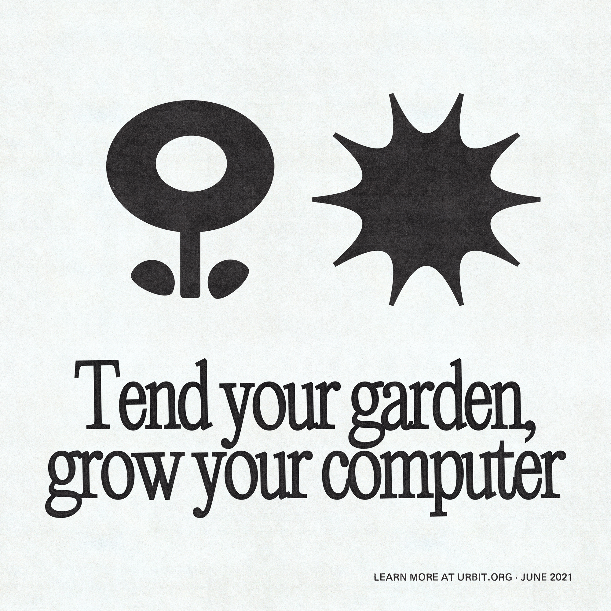
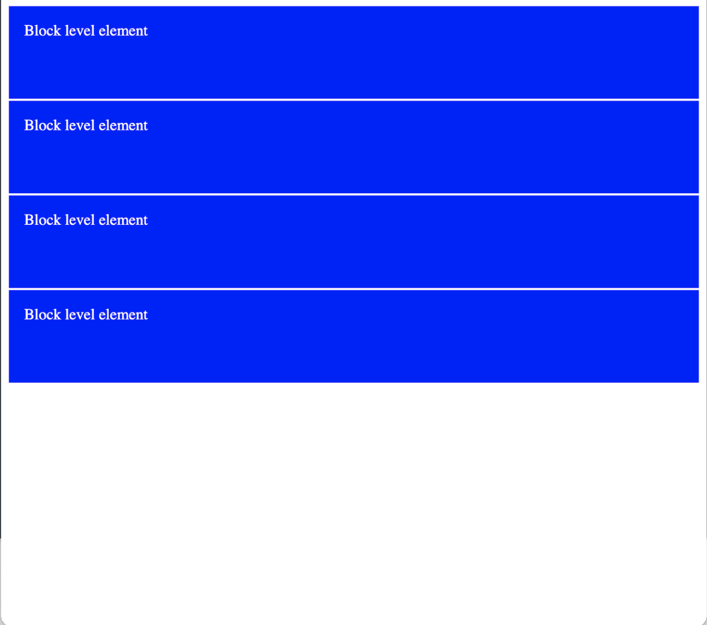
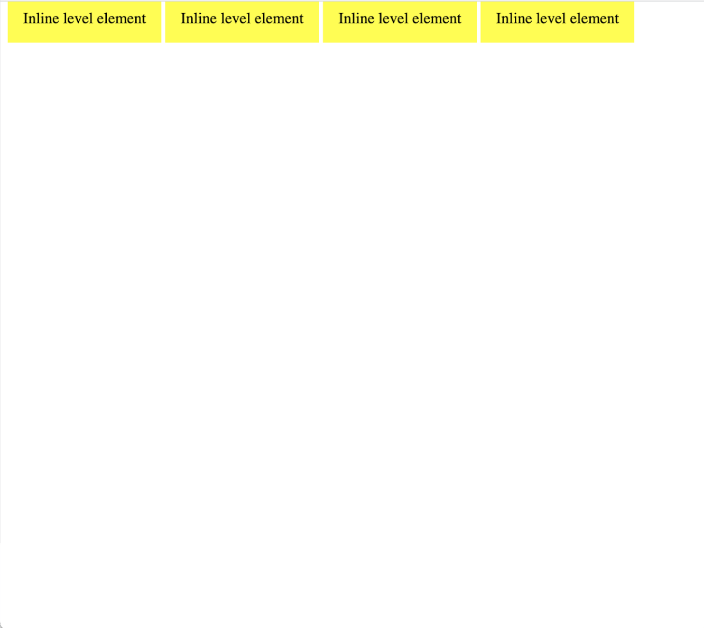
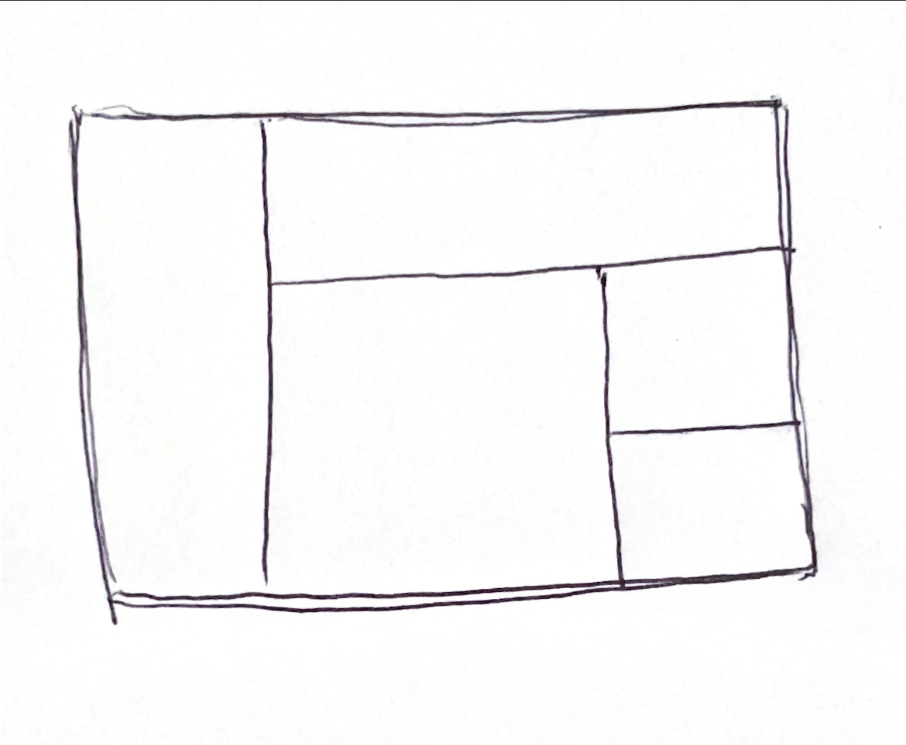

CSS Layout: Digital Gardening
"A garden is a collection of evolving ideas that aren't strictly organised by their publication date. They're inherently exploratory – notes are linked through contextual associations. They aren't refined or complete - notes are published as half-finished thoughts that will grow and evolve over time. They're less rigid, less performative, and less perfect than the personal websites we're used to seeing." - Maggie Appleton
A brief History of Digital Gardens
Mark Bernstein's 1998 essay, Hypertext Gardens appears to be the first recorded mention of the term.
To early web inhabitants, their idea of the web was that is was very much like a labyrinth that was tended by WikiGardeners and WikiGnomes. They wanted to create a pick-your-own path experience.
The Navigation Problem - the issue of how to give web users just enough guidance to freely explore the web, without forcing them into pre-defined browsing experiences. The eternal struggle to find the right balance of chaos and structure.
"It's different way of thinking about our online behaviour around information - one that accumulates personal knowledge over time in an explorable space" Read more by Mike Caufield and his main argument that we have become swept away by streams

CSS Layout: Flexbox, Grid, Positioning
CSS: Recap
CSS is written in declarations
background-color: blue;
This is made up of a property and a value
Remember there are three ways to write CSS:
- Inline
- Internal
- External
Keep in mind:
- Generally you don't want to use inline styles. CSS is much more powerful when you're using selectors.
- CSS is all about layering styles and using nested HTML elements.
HTML Recap: Block vs. Inline
When we're talking about how HTML elements display, there are two main types: block-level elements and inline elements.
Display Property
display: block
display: inline
display: inline-block
display: none
Position Property
position: static
position: fixed
position: relative
position: absolute
Making Layouts Responsive
This will make your code change style at different screen widths
@media only screen and (max-width: 600px) {
body {
background-color: lightblue;
}
}
More CSS Layout Resources click to Look more at Grid and Flexbox


Lets make our own digital gardens: download this example code to start
Start to build out our garden plots, style, add images, links, text. Use alt and title to add text to images when you hover. You can also make separate divs that have display properties that start from display:none and on a selector with a :hover psudo-selector, to display: block and use positioning properties to position the div where you want it to show up
alt text is for an alternative representation of an image. title text is for tooltips.
CSS Layout Coding Challenge!
Start by sketching out a simple layout that you can use as a reference. Label each section with it's html tag to help with coding structure.
Your sketch might look something like this:
- Code the HTML
- Code the CSS using grid / flex display properties. Style the boxes so you can distinguish each section by using background color or borders
- Add any content if time permits